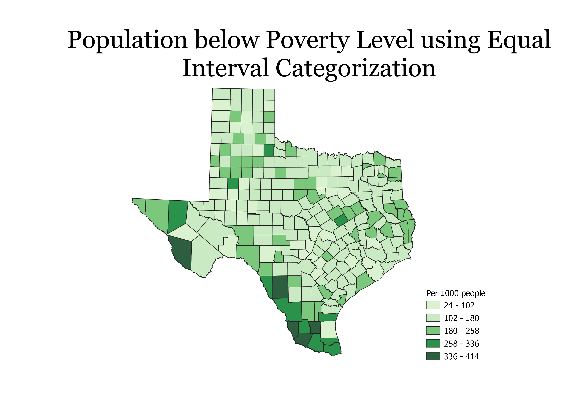
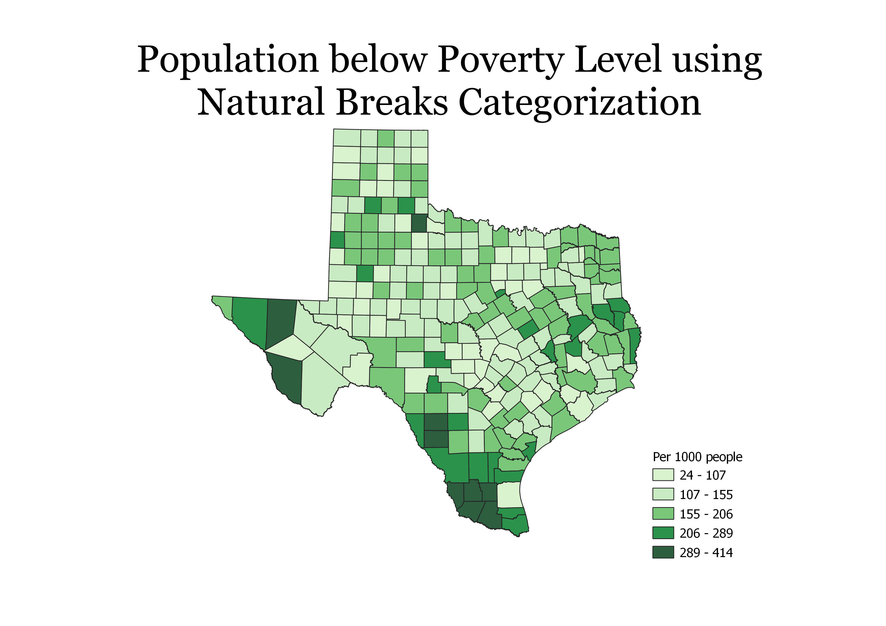

This map categorizes the data using equal counts. Equal counts tries to group the data in such a way that each group has the same quantity. It does this by counting all the values and taking the average based on the number of groups we have. This method ensures that there are not too few or too many items in each group. A con about using this method is that a really large outlier might be put in the same group as much smaller values just so that the count of each group will be similar.
This map categorizes the data using equal intervals. Equal intervals divides the values into equal groups so the range of each group will always be thesame. A pro about this method is that since it divides the values into equal groups, you can easily compare the attributes of one group to another. A con about using this method is that since it divides the values into equal groups, some groups might have too many values and others might have too few.
This map categorizes data using natural breaks. Natural breaks divides the data in a way that minimizes variation within each group. This method is useful because it minimizes variation within each group and maximizes it between other groups. It might not be very good if the data does not have much variation.